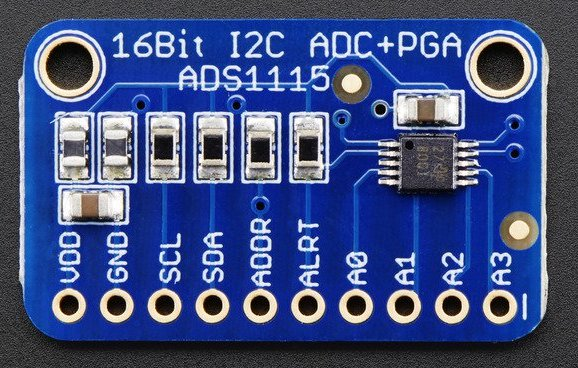
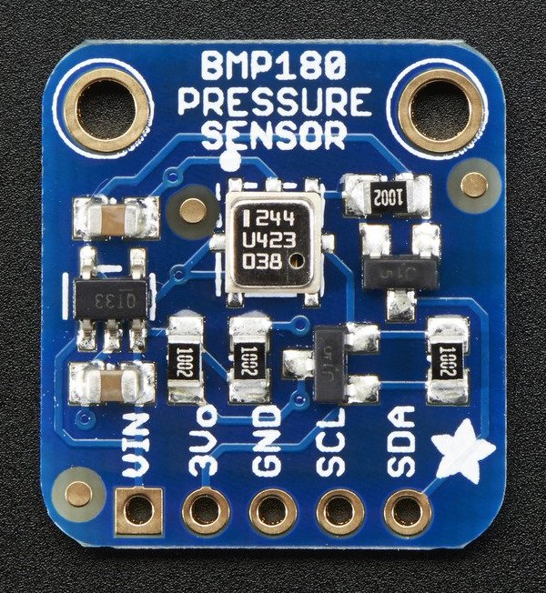
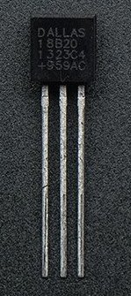
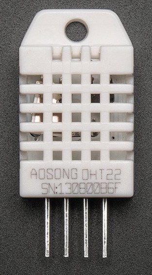
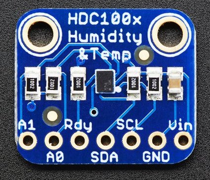
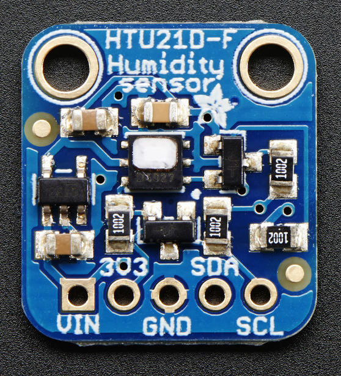
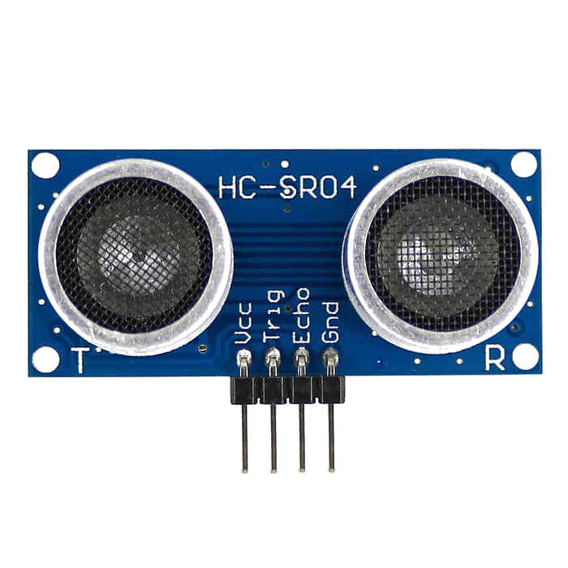

Sensor Component¶
esphomelib has support for many different sensors. Each of them is a
platform of the sensor domain and each sensor has several base
configuration options.
Currently supported sensor platforms:
 |
 |  |
| ADC | ADS1115 | BMP085 |
|  |  |  |
| Dallas | DHT | HDC1080 |
|  |  | |
| HTU21D | Pulse Counter | Ultrasonic Sensor |
Base Sensor Configuration¶
All sensors in esphomeyaml/esphomelib have a name and some other optional configuration options. By default, the sensor platform will chose appropriate values for all of these by default, but you can always override them if you want to.
# Example sensor configuration
name: Livingroom Temperature
# Optional variables:
unit_of_measurement: "°C"
icon: "mdi:water-percent"
accuracy_decimals: 1
expire_after: 30s
filters:
- sliding_window_moving_average:
window_size: 15
send_every: 15
Configuration variables:
- name (Required, string): The name for the sensor.
- unit_of_measurement (Optional, string): Manually set the unit of measurement the sensor should advertise its values with. This does not actually do any maths (conversion between units).
- icon (Optional, icon): Manually set the icon to use for the sensor in the frontend.
- accuracy_decimals (Optional, int): Manually set the accuracy of decimals to use when reporting values.
- expire_after (Optional, time): Manually set the time in which the sensor values should be marked as “expired”/“unknown”. Not providing any value means no expiry.
- filters (Optional): Specify filters to use for some basic transforming of values. Defaults to a basic sliding window moving average over the last few values. See Sensor Filters for more information.
- All other options from MQTT Component.
Sensor Filters¶
esphomeyaml/esphomelib allow you to do some basic preprocessing of sensor values before they’re sent to Home Assistant. This is for example useful if you want to apply some average over the last few values to relief Home Assistant’s state machine and keep the history graphs in the front-end a bit more clean. More sophisticated filters should be done with Home Assistant filter sensor.
# Example filters:
filters:
- offset: 2.0
- multiply: 1.2
- filter_out: 42.0
- filter_nan:
- sliding_window_moving_average:
window_size: 15
send_every: 15
- exponential_moving_average:
alpha: 0.1
send_every: 15
- lambda: x * (9.0/5.0) + 32.0
Above example configuration entry is probably a bit useless, but shows every filter there is currently:
- offset: Add an offset to every sensor value.
- multiply: Multiply each sensor value by this number.
- filter_out: Remove every sensor value that equals this number.
- filter_nan: Remove every value that is considered
NAN(not a number) in C. - sliding_window_moving_average: A simple moving
average
over the last few values.
- window_size: The number of values over which to perform an average when pushing out a value.
- send_every: How often a sensor value should be pushed out. For example, in above configuration the weighted average is only pushed out on every 15th received sensor value.
- exponential_moving_average: A simple exponential moving
average
over the last few values.
- alpha: The forget factor/alpha value of the filter.
- send_every: How often a sensor value should be pushed out.
- lambda: Perform a simple mathematical operation over the sensor
values. The input value is
xand the result of the lambda is used as output. Each floating point operation should have.0attached as in above configuration. This will be copied over to the C++ code as a raw string.
Example: Converting Celsius to Fahrenheit¶
While I personally don’t like the Fahrenheit temperature scale, I do understand that having temperature values appear in the fahrenheit unit is quite useful to some users. esphomelib uses the celsius temperature unit internally, and I’m not planning on making converting between the two simple (😉), but you can use this filter to convert celsius values to fahrenheit.
filters:
- lambda: x * (9.0/5.0) + 32.0
unit_of_measurement: "°F"